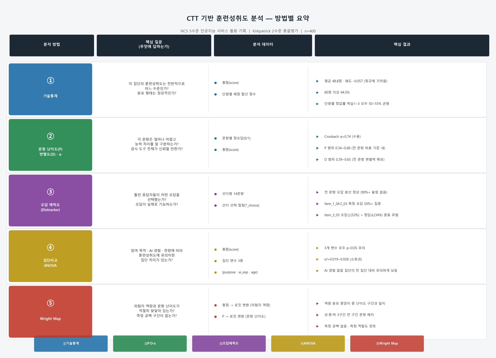
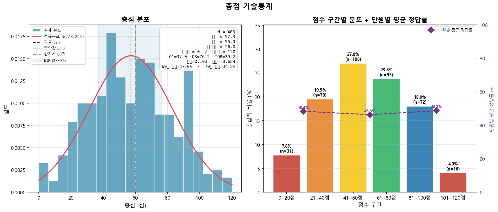
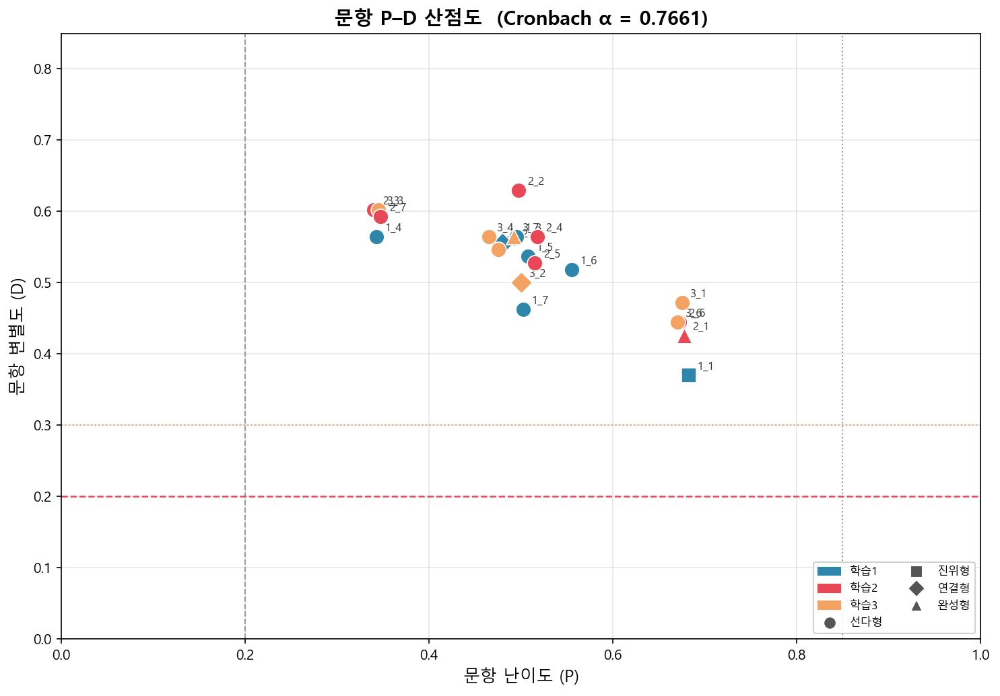
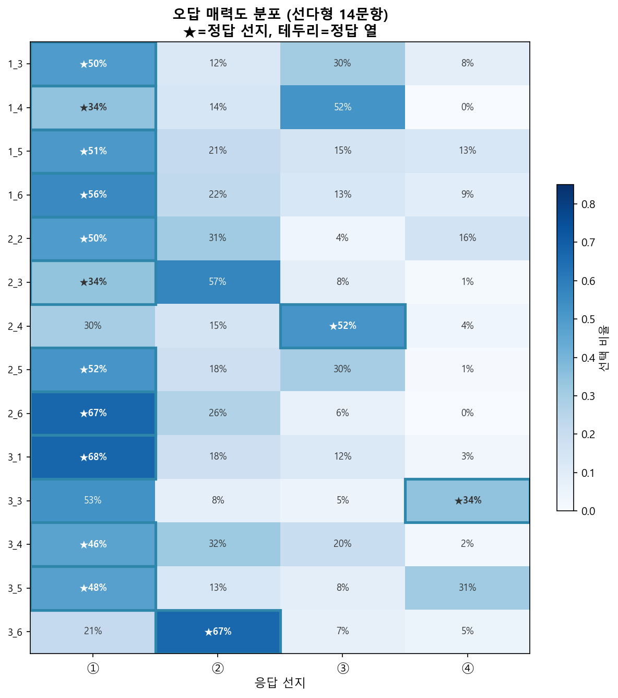
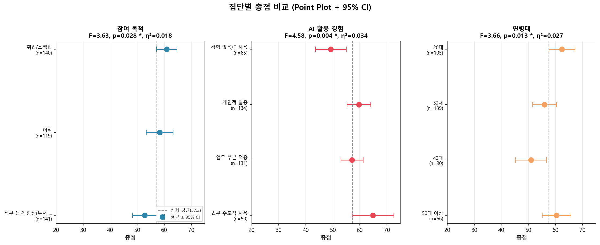
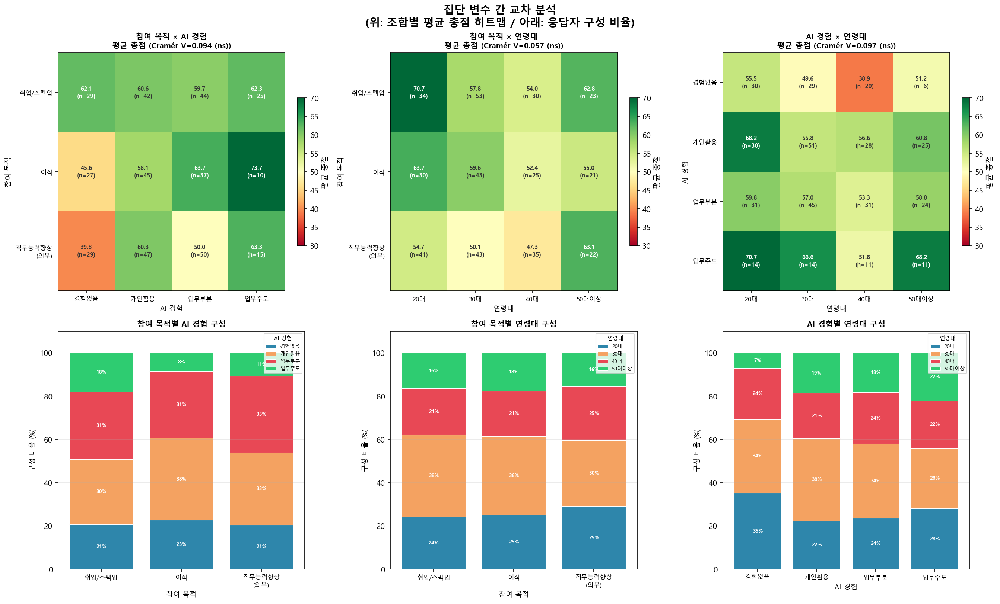
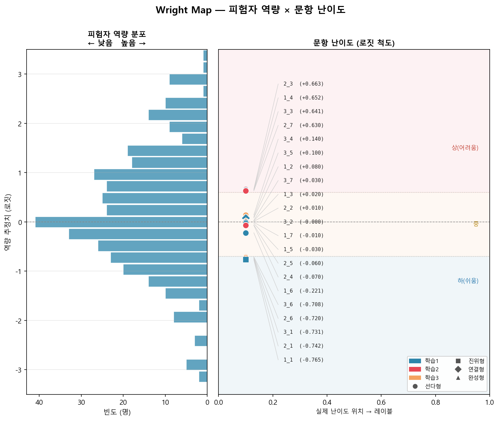

NCS 5수준 인공지능 서비스 활용 기획
훈련성취도 평가 분석 보고서
고전검사이론(CTT) 기반 문항 분석 · 집단 비교 · Wright Map
NCS 5수준 「인공지능 서비스 활용 기획」(LM2001070206_18v1) 교육과정 이수자를 대상으로 Kirkpatrick 2수준(학습) 훈련성취도를 측정하고, 교육과정 개선을 위한 근거 자료를 확보한다.
| 항목 | 내용 |
|---|---|
| 평가 유형 | 총괄평가 (훈련 종료 후 1회) |
| 분석 이론 | 고전검사이론 (CTT) |
| 총 문항 | 21문항 |
| 총 배점 | 120점 (객관식 100 + 주관식 20) |
| 분석 도구 | Python (numpy · pandas · scipy) |
| 능력단위 요소 | 코드 | 문항 수 | 배점 |
|---|---|---|---|
| 인공지능 서비스 활용 방안 분석하기 | 2001070206_18v1.1 | 7문항 | 39점 |
| 인공지능 서비스 비즈니스 모델 활용 기획하기 | 2001070206_18v1.2 | 7문항 | 43점 |
| 인공지능 서비스 상품화 기획하기 | 2001070206_18v1.3 | 7문항 | 38점 |

| 통계량 | 값 | 설명 |
|---|---|---|
| 응답자 수(N) | 400명 | 시뮬레이션 더미데이터 |
| 평균(Mean) | 57.27점 | 전체 평균 |
| 중앙값(Median) | 56.0점 | 정중앙 점수 (평균과 근접 → 대칭 분포) |
| 표준편차(SD) | 26.02점 | 만점 대비 약 22% — 개인차 큼 |
| 최솟값 / 최댓값 | 0점 / 120점 | 전 범위 사용 |
| Q1 / Q3 / IQR | 37.0 / 76.25 / 39.25 | 중간 50% 학생의 점수 폭 |
| 왜도(Skewness) | 0.103 | 0에 가까움 → 정규분포에 가까운 대칭 |
| 첨도(Kurtosis) | –0.684 | 음수 → 정규보다 납작 (응답자 고루 분포) |
| 60점 이상 비율 | 47.0% | 만점(120점)의 50% 이상 달성 |
| 70점 이상 비율 | 34.75% | 만점의 약 58% 이상 달성 |

| 점수 구간 | 인원 | 비율 |
|---|---|---|
| 0~20점 | 31명 | 7.8% |
| 21~40점 | 78명 | 19.5% |
| 41~60점 | 108명 | 27.0% |
| 61~80점 | 95명 | 23.8% |
| 81~100점 | 72명 | 18.0% |
| 101~120점 | 16명 | 4.0% |
| 능력단위 | 만점 | 평균 | 정답률 | 60% 달성 |
|---|---|---|---|---|
| 학습 1 | 39점 | 18.86 | 48.4% | 39.5% |
| 학습 2 | 43점 | 19.93 | 46.3% | 32.3% |
| 학습 3 | 38점 | 18.49 | 48.7% | 39.0% |
※ 학습 2의 60% 달성률이 가장 낮은 이유: 상 난이도 서술형(item_2_07, 10점) 포함

★ 신규 주관식 문항 (item_1_07 · item_2_07 · item_3_07)
| 문항 | 단원 | 유형 | 영역 | P | D | r_pb | 판정 |
|---|---|---|---|---|---|---|---|
| item_1_01 | 학습1 | 진위형 | 지식/이해 | 0.682 | 0.370 | 0.284 | 변별력 있음 |
| item_1_02 | 학습1 | 연결형 | 지식/이해 | 0.480 | 0.556 | 0.367 | 변별력 높음 |
| item_1_03 | 학습1 | 선다형 | 지식/이해 | 0.495 | 0.565 | 0.381 | 변별력 높음 |
| item_1_04 | 학습1 | 선다형 | 적용 | 0.343 | 0.565 | 0.328 | 변별력 높음 |
| item_1_05 | 학습1 | 선다형 | 지식/이해 | 0.507 | 0.537 | 0.333 | 변별력 높음 |
| item_1_06 | 학습1 | 선다형 | 지식/이해 | 0.555 | 0.519 | 0.328 | 변별력 높음 |
| item_1_07 ★ | 학습1 | 서술형 | 적용 | 0.503 | 0.463 | 0.314 | 변별력 높음 |
| item_2_01 | 학습2 | 완성형 | 지식/이해 | 0.677 | 0.426 | 0.281 | 변별력 높음 |
| item_2_02 | 학습2 | 선다형 | 지식/이해 | 0.497 | 0.630 | 0.383 | 변별력 높음 |
| item_2_03 | 학습2 | 선다형 | 적용 | 0.340 | 0.602 | 0.330 | 변별력 높음 |
| item_2_04 | 학습2 | 선다형 | 지식/이해 | 0.517 | 0.565 | 0.338 | 변별력 높음 |
| item_2_05 | 학습2 | 선다형 | 지식/이해 | 0.515 | 0.528 | 0.326 | 변별력 높음 |
| item_2_06 | 학습2 | 선다형 | 지식/이해 | 0.672 | 0.444 | 0.316 | 변별력 높음 |
| item_2_07 ★ | 학습2 | 서술형 | 적용 | 0.348 | 0.593 | 0.328 | 변별력 높음 |
| item_3_01 | 학습3 | 선다형 | 지식/이해 | 0.675 | 0.472 | 0.337 | 변별력 높음 |
| item_3_02 | 학습3 | 연결형 | 지식/이해 | 0.500 | 0.500 | 0.307 | 변별력 높음 |
| item_3_03 | 학습3 | 선다형 | 적용 | 0.345 | 0.602 | 0.353 | 변별력 높음 |
| item_3_04 | 학습3 | 선다형 | 지식/이해 | 0.465 | 0.565 | 0.355 | 변별력 높음 |
| item_3_05 | 학습3 | 선다형 | 적용 | 0.475 | 0.546 | 0.379 | 변별력 높음 |
| item_3_06 | 학습3 | 선다형 | 지식/이해 | 0.670 | 0.444 | 0.352 | 변별력 높음 |
| item_3_07 ★ | 학습3 | 완성형 | 지식/이해 | 0.493 | 0.565 | 0.347 | 변별력 높음 |
※ D 기준 (Ebel, 1965): 0.40 이상=높음 / 0.30~0.39=있음 / 0.20~0.29=다소 낮음

채점 기준: ①응용 범위 식별 방법(2점) ②필요 요소 도출 근거(2점) ③활용 방안 연계(1점)
P=0.503으로 중간 수준. 절반 가량이 서술 기준을 충족함.
채점 기준: ①목표 시장 분석 내용(4점) ②전략 수립 방향(3점) ③중장기 확대 방안(3점)
P=0.348로 어려운 문항. D=0.593으로 높은 변별력 — 우수 학습자 식별에 기여.

| 집단 | n | 평균 | SD |
|---|---|---|---|
| 취업/스펙업 | 140 | 60.92점 | 22.55 |
| 이직 | 119 | 58.31점 | 27.59 |
| 직무능력향상(의무) | 141 | 52.77점 | 27.36 |
| 비교 | 차이 | 유의 |
|---|---|---|
| 취업/스펙업 vs 직무능력향상 | +8.2점 | *** |
| 이직 vs 직무능력향상 | +5.5점 | ** |
| 취업/스펙업 vs 이직 | +2.6점 | ns |
의무 이수 집단의 학습 동기 부여 전략이 필요하다.
| 집단 | n | 평균 |
|---|---|---|
| 업무 주도적 사용 | 50 | 64.86점 |
| 개인적 활용 | 134 | 59.65점 |
| 업무 부분 적용 | 131 | 57.13점 |
| 경험 없음/미사용 | 85 | 49.28점 |
21문항 기준 η²이 0.028→0.034로 증가 — 주관식 추가 후 차이 확대
| 비교 | 차이 | 유의 |
|---|---|---|
| 업무주도 vs 경험없음 | +15.6점 | *** |
| 개인활용 vs 경험없음 | +10.4점 | *** |
| 업무부분 vs 경험없음 | +7.8점 | *** |
| 업무주도 vs 업무부분 | +7.7점 | ** |
| 개인활용 vs 업무부분 | +2.5점 | ns |
| 집단 | n | 평균 |
|---|---|---|
| 20대 | 105 | 62.42점 |
| 50대 이상 | 66 | 60.45점 |
| 30대 | 139 | 55.97점 |
| 40대 | 90 | 50.94점 |
21문항 기준: 30대 vs 40대 쌍도 새롭게 유의
50대 이상(60.5)에서 반등하는 비단조적 패턴.
40대 저성취는 업무 부담·학습 시간 부족 반영 가능. 50대 이상 반등은 자발적 고동기 시니어 편의 가능성.
⚠️ η²=0.027(소효과) — AI 경험(η²=0.034)보다 약한 효과.

| 비교 쌍 | Cramér's V | p값 | 결론 |
|---|---|---|---|
| 참여 목적 × AI 경험 | 0.094 | .318 | 독립적 |
| 참여 목적 × 연령대 | 0.057 | .861 | 독립적 |
| AI 경험 × 연령대 | 0.134 | .071 | 독립적 |
세 변수가 서로 독립적 → 각 변수의 효과를 별도로 해석 가능
의무 참여인데 AI를 한 번도 써본 적 없는 집단이 가장 취약하다. 학습 동기와 사전 지식이 모두 부족한 이 집단에 복합 맞춤 지원 전략이 필요하다.

| 구간 | 해당 문항 | 로짓 범위 | 특징 |
|---|---|---|---|
| 상 (어려움) | item_2_03, item_1_04, item_3_03, item_2_07 | +0.641 ~ +0.669 | 적용 수준 4문항 — 서술형 포함 |
| 중 (보통) | item_3_04, item_3_05, item_1_02, item_1_03, item_2_02, item_3_02, item_1_05, item_2_04, item_2_05, item_1_06, item_1_07, item_3_07 | –0.261 ~ +0.140 | 12문항 집중 — 서술형/완성형 포함 |
| 하 (쉬움) | item_3_06, item_2_06, item_3_01, item_2_01, item_1_01 | –0.742 ~ –0.708 | 기초 지식 확인용 5문항 |
| 평가 영역 | 결과 | 판정 |
|---|---|---|
| 전체 평균 성취도 | 57.27점 / 120점 (60점 이상 47.0%) | 보통 |
| 검사 도구 신뢰도 | Cronbach α = 0.7661 | 수용 가능 |
| 문항 질적 수준 | 전 21문항 D≥0.37, P 허용 범위 내 | 양호 |
| 주관식 문항 기능 | 서술형 2개 P·D 허용 기준 충족 | 적절 |
| 단원별 성취 균형 | 학습 1·2·3 모두 46~49% | 균형적 |
| 집단 간 차이 | 참여 동기·AI 경험·연령별 유의 차이 | 지원 필요 |